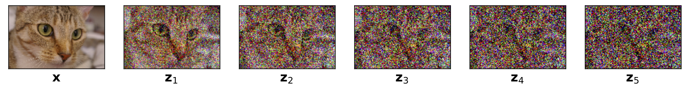
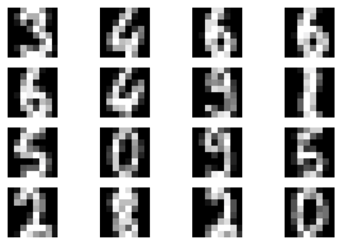
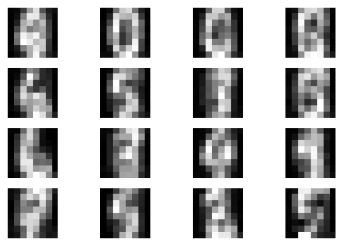
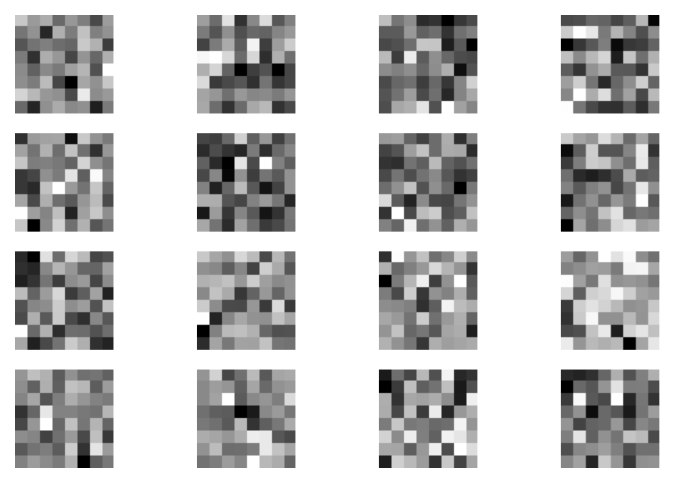
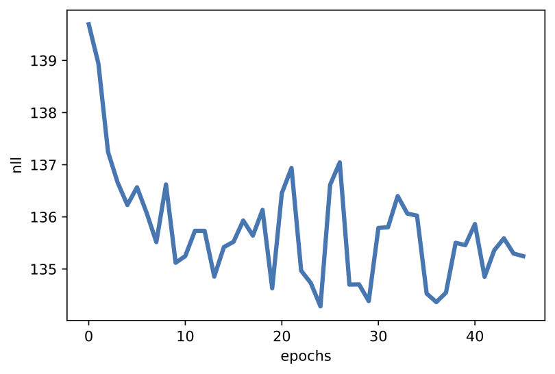

In the previous post, we discussed the issue of learning useful representations in latent variables models, taking a closer look at hierarchical Variational Auto-Encoders. We hypothesize that we can obtain useful data representations by applying a hierarchical latent variable model. Moreover, highlighted a real problem in hierarchical VAEs of the variational posterior collapsing to the prior, resulting in learning meaningless representation. In other words, it seems that architecture with bottom-up variational posteriors (i.e., stochastic dependencies going from observables to the last latents) and top-down generative distributions seems to be a mediocre inductive bias and is rather troublesome to train. A potential solution is top-down VAEs. However, is there nothing we can do about the vanilla structure? As you may imagine, nothing is lost and some approaches take advantage of the bottom-up and the top-down structures. Here, we will look into the diffusion-based deep generative models (DDGM) (a.k.a. deep diffusion probabilistic models) (Ho et al., 2020; Sohl-Dickstein et al., 2015).
DDGM could be briefly explained as hierarchial VAEs with the bottom-up path (i.e., the variational posteriors) defined by a diffusion process (e.g., a Gaussian diffusion) and the top-down path parameterized by DNNs (a reversed diffusion). Interestingly, the bottom-up path could be fixed, namely, it necessarily does not have any learnable parameters. An example of applying a Gaussian diffusion is presented in Figure 1. Since the variational posteriors are fixed, we can think of them as adding Gaussian noise at each layer. Then, the final layer resembles Gaussian noise (see $\mathbf{z}_5$ in Figure 1). If we recall the discussion about a potential issue of the posterior collapse in hierarchical VAEs, this should not be a problem anymore. Why? Because we should get a standard Gaussian distribution in the last layer by design. Pretty neat, isn't it?

Figure 1. An example of applying a Gaussian diffusion to an image of a cat, $\mathbf{x}$.
DDGMs have become extremely popular these days. They are appealing for at least two reasons: (i) they give amazing results for image (Ho et al., 2020 Kingma et al., 2021; Saharia et al., 2021), audio (Kong et al., 2020), and text (Austin et al., 2021; Hoogeboom et al., 2021) synthesis while being relatively simple to implement, (ii) they are closely related to stochastic differential equations and, thus, their theoretical properties seem to be especially interesting (Huang et al., 2021; Song et al., 2021; Tzen & Raginsky, 2019). There are two potential drawbacks though, namely: (i) DDGMs are unable (for now at least) to learn a representation, (ii) similarly to flow-based models, the dimensionality of input is kept across the whole model (i.e., there is no bottleneck on the way).
Model formulation Originally, deep diffusion probabilistic models were proposed in (Sohl-Dickstein et al., 2015) and they took inspiration from non-equilibrium statistical physics. The main idea is to iteratively destroy the structure in data through a forward diffusion process and, afterward, to learn a reverse diffusion process to restore the structure in data. In a follow-up paper (Ho et al., 2020) recent developments in deep learning were used to train a powerful and flexible diffusion-based deep generative model that achieved SOTA results in the task of image synthesis. Here, we will abuse the original notation to make a clear connection between hierarchical latent variable models and DDGMs. As previously, we are interested in finding a distribution over data, $p_{\theta}(\mathbf{x})$, however, we assume an additional set of latent variables $\mathbf{z}_{1:T} = [\mathbf{z}_1, \ldots, \mathbf{z}_T]$. The marginal likelihood is defined by integrating out all latents:
$$ p_{\theta}(\mathbf{x}) = \int p_{\theta}(\mathbf{x}, \mathbf{z}_{1:T})\ \mathrm{d} \mathbf{z}_{1:T} $$The joint distribution is modeled as a first-order Markov chaing with Gaussian transitions, namely:
\begin{align} p_{\theta}(\mathbf{x}, \mathbf{z}_{1:T}) &= p_{\theta}(\mathbf{x} | \mathbf{z}_{1}) \left(\prod_{i=1}^{T-1} p_{\theta}(\mathbf{z}_{i}|\mathbf{z}_{i+1}) \right) p_{\theta}(\mathbf{z}_{T}) \end{align}where $\mathbf{x} \in \mathbb{R}^{D}$ and $\mathbf{z}_i \in \mathbb{R}^{D}$ for $i = 1, \ldots, T$. Please note that the latents have the same dimensionality as the observables. This is the same situation as in the case of flow-based models. We parameterize all distributions using DNNs.
So far, we have not introduced anything new! This is again a hierarchical latent variable model. As in the case of hierarchical VAEs, we can introduce a family of variational posteriors as follows:
$$ Q_{\phi}(\mathbf{z}_{1:T} | \mathbf{x}) = q_{\phi}(\mathbf{z}_{1} | \mathbf{x}) \left(\prod_{i=2}^{T} q_{\phi}(\mathbf{z}_{i}|\mathbf{z}_{i-1}) \right) $$The key point is how we define these distributions. Before, we used normal distributions parameterized by DNNs but now we formulate them as the following Gaussian diffusion process (Sohl-Dickstein et al., 2015):
\begin{align} q_{\phi}(\mathbf{z}_{i}|\mathbf{z}_{i-1}) &= \mathcal{N}(\mathbf{z}_{i} | \sqrt{1 - \beta_i} \mathbf{z}_{i-1}, \beta_i \mathbf{I}) \end{align}where $\mathbf{z}_{0} = \mathbf{x}$. Notice that a single step of the difussion, $q_{\phi}(\mathbf{z}_{i}|\mathbf{z}_{i-1})$, works in a relatively easy way. Namely, it takes the previously generated object $\mathbf{z}_{i-1}$, scales it by $\sqrt{1 - \beta_i}$ and then adds noise with variance $\beta_i$. To be even more explicit, we can write it using the reparameterization trick:
$$ \mathbf{z}_{i} = \sqrt{1 - \beta_i} \mathbf{z}_{i-1} + \sqrt{\beta_i} \odot \epsilon, $$where $\epsilon \sim \mathcal{N}(0,\mathbf{I})$. In principle, $\beta_i$ could be learned by backpropagation, however, as noted by (Sohl-Dickstein et al., 2015; Ho et al., 2020), it could be fixed. For instance, (Ho et al., 2020) suggests to change it linearly from $\beta_1=10^{-4}$ to $\beta_T = 0.02$.
The objective Since we realized that the difference between a DDGM and a hierarchical VAE lies in the definition of the variational posteriors and the dimensionality of the latents, but the whole construction is basically the same, we can predict what is the learning objective. Do you remember? Yes, it is ELBO! We can derive the ELBO as follows:
\begin{align} \ln p_{\theta}(\mathbf{x}) =& \ln \int Q_{\phi}(\mathbf{z}_{1:T} | \mathbf{x}) \frac{p_{\theta}(\mathbf{x}, \mathbf{z}_{1:T})}{Q_{\phi}(\mathbf{z}_{1:T} | \mathbf{x})}\ \mathrm{d} \mathbf{z}_{1:T} \\ \geq& \mathbb{E}_{Q_{\phi}(\mathbf{z}_{1:T} | \mathbf{x})}\left[ \ln p_{\theta}(\mathbf{x} | \mathbf{z}_{1}) + \sum_{i=1}^{T-1} \ln p_{\theta}(\mathbf{z}_{i}|\mathbf{z}_{i+1}) + \ln p_{\theta}(\mathbf{z}_{T}) - \sum_{i=2}^{T} \ln q_{\phi}(\mathbf{z}_{i}|\mathbf{z}_{i-1}) - \ln q_{\phi}(\mathbf{z}_{1} | \mathbf{x})\right] \\ =& \mathbb{E}_{Q_{\phi}(\mathbf{z}_{1:T} | \mathbf{x})}\left[ \ln p_{\theta}(\mathbf{x} | \mathbf{z}_{1}) + \ln p_{\theta}(\mathbf{z}_{1}|\mathbf{z}_{2}) + \sum_{i=2}^{T-1} \ln p_{\theta}(\mathbf{z}_{i}|\mathbf{z}_{i+1}) + \ln p_{\theta}(\mathbf{z}_{T}) - \sum_{i=2}^{T-1} \ln q_{\phi}(\mathbf{z}_{i}|\mathbf{z}_{i-1}) - \ln q_{\phi}(\mathbf{z}_{T}|\mathbf{z}_{T-1}) - \ln q_{\phi}(\mathbf{z}_{1} | \mathbf{x})\right] \\ =& \mathbb{E}_{Q_{\phi}(\mathbf{z}_{1:T} | \mathbf{x})}\left[ \ln p_{\theta}(\mathbf{x} | \mathbf{z}_{1}) + \sum_{i=2}^{T-1} \left( \ln p_{\theta}(\mathbf{z}_{i}|\mathbf{z}_{i+1}) - \ln q_{\phi}(\mathbf{z}_{i}|\mathbf{z}_{i-1}) \right) + \ln p_{\theta}(\mathbf{z}_{T}) - \ln q_{\phi}(\mathbf{z}_{T}|\mathbf{z}_{T-1}) + \ln p_{\theta}(\mathbf{z}_{1}|\mathbf{z}_{2}) - \ln q_{\phi}(\mathbf{z}_{1} | \mathbf{x})\right] \\ \stackrel{df}{=}& \mathcal{L}(\mathbf{x};\theta,\phi) \end{align}Eventually, the ELBO is the following:
$$ \mathcal{L}(\mathbf{x};\theta,\phi) = \mathbb{E}_{Q_{\phi}(\mathbf{z}_{1:T} | \mathbf{x})}\left[ \ln p_{\theta}(\mathbf{x} | \mathbf{z}_{1}) + \sum_{i=2}^{T-1} \left( \ln p_{\theta}(\mathbf{z}_{i}|\mathbf{z}_{i+1}) - \ln q_{\phi}(\mathbf{z}_{i}|\mathbf{z}_{i-1}) \right) + \ln p_{\theta}(\mathbf{z}_{T}) - \ln q_{\phi}(\mathbf{z}_{T}|\mathbf{z}_{T-1}) + \ln p_{\theta}(\mathbf{z}_{1}|\mathbf{z}_{2}) - \ln q_{\phi}(\mathbf{z}_{1} | \mathbf{x})\right] $$We can re-write the ELBO in terms of Kullback-Leibler divergences (note that we use the expected value with respect to $Q_{\phi}(\mathbf{z}_{-i} | \mathbf{x})$ to highlight that a proper variational posterior is used for the definition of the Kullback-Lebler divergence):
$$ \mathcal{L}(\mathbf{x};\theta,\phi) = \mathbb{E}_{Q_{\phi}(\mathbf{z}_{1:T} | \mathbf{x})}\left[ \ln p_{\theta}(\mathbf{x} | \mathbf{z}_{1}) \right] - \sum_{i=2}^{T-1} \mathbb{E}_{Q_{\phi}(\mathbf{z}_{-i} | \mathbf{x})} \left[ KL\left[q_{\phi}(\mathbf{z}_{i}|\mathbf{z}_{i-1}) || p_{\theta}(\mathbf{z}_{i}|\mathbf{z}_{i+1}) \right] \right] - \mathbb{E}_{Q_{\phi}(\mathbf{z}_{-i} | \mathbf{x})} \left[ KL \left[ q_{\phi}(\mathbf{z}_{T}|\mathbf{z}_{T-1}) || p_{\theta}(\mathbf{z}_{T}) \right] \right] - \mathbb{E}_{Q_{\phi}(\mathbf{z}_{-i} | \mathbf{x})} \left[ KL \left[ q_{\phi}(\mathbf{z}_{1} | \mathbf{x}) || p_{\theta}(\mathbf{z}_{1}|\mathbf{z}_{2}) \right] \right] $$Example Let us take $T=5$. This is not much (e.g., (Ho et al., 2020) uses $T=1000$) but it is easier to explain the idea with a very specific model. Moreover, let us use a fixed $\beta_t \equiv \beta$. Then we have the following DDGM:
\begin{align} p_{\theta}(\mathbf{x}, \mathbf{z}_{1:5}) &= p_{\theta}(\mathbf{x} | \mathbf{z}_{1}) p_{\theta}(\mathbf{z}_{1}|\mathbf{z}_{2}) p_{\theta}(\mathbf{z}_{2}|\mathbf{z}_{3}) p_{\theta}(\mathbf{z}_{3}|\mathbf{z}_{4}) p_{\theta}(\mathbf{z}_{4}|\mathbf{z}_{5}) p_{\theta}(\mathbf{z}_{5}) , \end{align}and the variational posteriors:
$$ Q_{\phi}(\mathbf{z}_{1:5} | \mathbf{x}) = q_{\phi}(\mathbf{z}_{1} | \mathbf{x}) q_{\phi}(\mathbf{z}_{2}|\mathbf{z}_{1}) q_{\phi}(\mathbf{z}_{3}|\mathbf{z}_{2}) q_{\phi}(\mathbf{z}_{4}|\mathbf{z}_{3}) q_{\phi}(\mathbf{z}_{5}|\mathbf{z}_{4}) . $$The ELBO could be specified as well:
$$ \mathcal{L}(\mathbf{x};\theta,\phi) = \mathbb{E}_{Q_{\phi}(\mathbf{z}_{1:5} | \mathbf{x})}\left[ \ln p_{\theta}(\mathbf{x} | \mathbf{z}_{1}) \right] - \sum_{i=2}^{4} \mathbb{E}_{Q_{\phi}(\mathbf{z}_{-i} | \mathbf{x})} \left[ KL\left[q_{\phi}(\mathbf{z}_{i}|\mathbf{z}_{i-1}) || p_{\theta}(\mathbf{z}_{i}|\mathbf{z}_{i+1}) \right] \right] - \mathbb{E}_{Q_{\phi}(\mathbf{z}_{-i} | \mathbf{x})} \left[ KL \left[ q_{\phi}(\mathbf{z}_{5}|\mathbf{z}_{4}) || p_{\theta}(\mathbf{z}_{5}) \right] \right] - \mathbb{E}_{Q_{\phi}(\mathbf{z}_{-i} | \mathbf{x})} \left[ KL \left[ q_{\phi}(\mathbf{z}_{1} | \mathbf{x}) || p_{\theta}(\mathbf{z}_{1}|\mathbf{z}_{2}) \right] \right] , $$where
$$ p_{\theta}(\mathbf{z}_{5}) = \mathcal{N}(\mathbf{z}_{5} | 0, \mathbf{I}) . $$The last interesting question is how to model inputs and, eventually, what distribution we should use to model $p(\mathbf{x}|\mathbf{z}_1)$. So far, we used the categorical distribution because pixels were integer-valued. However, for the DDGM, we assume they are continuous and we will use a simple trick. We normalize our inputs to values between $-1$ and $1$ and apply the Gaussian distribution with the unit variance and the mean being constrained to $[-1,1]$ using the tanh nonlinearity:
$$ p(\mathbf{x}|\mathbf{z}_1) = \mathcal{N}( \mathbf{x} | \mathrm{tanh}\left( NN(\mathbf{z}_1) \right), \mathbf{I}) , $$where $NN(\mathbf{z}_1)$ is a neural network. As a result, since the variance is one, $\ln p(\mathbf{x}|\mathbf{z}_1) = - MSE\left( \mathbf{x}, \mathrm{tanh}( NN(\mathbf{z}_1)) \right) + const$, so it is equivalent to the (negative) Mean Squared Error! I know, it is not a perfect way to do but it is simple and it works.
That's it! As you can see, there is no special magic here and we are ready to implement our DDGM. In fact, we can use the code of a hierarchical VAE and modify it accordingly. What is convenient about the DDGM is that the forward diffusion (i.e., the variational posteriors) are fixed and we need to sample from them, and only the reverse diffusion requires applying DDNs. But without any further mumbling, let us dive into the code!
At this point, you might think that it is pretty complicated and a lot of math is involved here. However, if you followed our previous discussions on VAEs, it should be rather clear what we need to do here.
The full code (with auxiliary functions) that you can play with is available here: [link].
class DDGM(nn.Module):
def __init__(self, p_dnns, decoder_net, beta, T, D):
super(DDGM, self).__init__()
print('DDGM by JT.')
self.p_dnns = p_dnns # a list of sequentials; a single Sequential defines a DNN to parameterize a distribution p(z_i | z_i+1)
self.decoder_net = decoder_net # the last DNN for p(x|z_1)
# other params
self.D = D # the dimensionality of the inputs (necessary for sampling!)
self.T = T # the number of steps
self.beta = torch.FloatTensor([beta]) # the fixed variance of diffusion
# The reparameterization trick for the Gaussian distribution
@staticmethod
def reparameterization(mu, log_var):
std = torch.exp(0.5*log_var)
eps = torch.randn_like(std)
return mu + std * eps
# The reparameterization trick for the Gaussian forward diffusion
def reparameterization_gaussian_diffusion(self, x, i):
return torch.sqrt(1. - self.beta) * x + torch.sqrt(self.beta) * torch.randn_like(x)
def forward(self, x, reduction='avg'):
# =====
# Forward Difussion
# Please note that we just "wander" around in the space using Gaussian random walk.
# We save all z's in a list
zs = [self.reparameterization_gaussian_diffusion(x, 0)]
for i in range(1, self.T):
zs.append(self.reparameterization_gaussian_diffusion(zs[-1], i))
# =====
# Backward Diffusion
# We start with the last z and proceed to x.
# At each step, we calculate means and variances.
mus = []
log_vars = []
for i in range(len(self.p_dnns) - 1, -1, -1):
h = self.p_dnns[i](zs[i+1])
mu_i, log_var_i = torch.chunk(h, 2, dim=1)
mus.append(mu_i)
log_vars.append(log_var_i)
# The last step: outputting the means for x.
# NOTE: We assume the last distribution is Normal(x | tanh(NN(z_1)), 1)!
mu_x = self.decoder_net(zs[0])
# =====ELBO
# RE
# This is equivalent to - MSE(x, mu_x) + const
RE = log_standard_normal(x - mu_x).sum(-1)
# KL: We need to go through all the levels of latents
KL = log_normal_diag(zs[-1], torch.sqrt(1. - self.beta) * zs[-1], torch.log(self.beta) - (log_standard_normal(zs[-1]))).sum(-1)
for i in range(len(mus)):
KL_i = (log_normal_diag(zs[i], torch.sqrt(1. - self.beta) * zs[i], torch.log(self.beta)) - log_normal_diag(zs[i], mus[i], log_vars[i])).sum(-1)
KL = KL + KL_i
# Final ELBO
if reduction == 'sum':
loss = -(RE - KL).sum()
else:
loss = -(RE - KL).mean()
return loss
# Sampling is the reverse diffusion with sampling at each step.
def sample(self, batch_size=64):
z = torch.randn([batch_size, self.D])
for i in range(len(self.p_dnns) - 1, -1, -1):
h = self.p_dnns[i](z)
mu_i, log_var_i = torch.chunk(h, 2, dim=1)
z = self.reparameterization(torch.tanh(mu_i), log_var_i)
mu_x = self.decoder_net(z)
return mu_x
# For sanity check, we also can sample from the forward diffusion.
# The result should resemble a white noise.
def sample_diffusion(self, x):
zs = [self.reparameterization_gaussian_diffusion(x, 0)]
for i in range(1, self.T):
zs.append(self.reparameterization_gaussian_diffusion(zs[-1], i))
return zs[-1]
After running the code with $T=5$ and $\beta=0.6$, we can expect results like in Figure 2.
A  B  C  D 
Figure 2. Examples of outcomes of the training: A Randomly selected real images. B Unconditional generations from the DDGM. C A visualization of the last stochastic level after applying the forward diffusion. As expected, the resulting images resemble pure noise. D An example of a validation curve for the negative log-likelihood, i.e., $-\ln p(\mathbf{x})$.
Extensions Currently, DDGMs are very popular deep generative models. What we present here is very close to the original formulation (Sohl-Dickstein et al., 2015). (Ho et al., 2020) introduced many interesting insights and improvements on the original idea, such as:
There were many follow-ups on (Ho et al., 2020), we mention only a few of them here:
DDGMs vs. VAEs vs. Flows In the end, it is worth making a comparison of DDGMs with VAEs and flow-based models. In Table 1, we provide a comparison based on rather arbitrary criteria:
| Model | Training | Likelihood | Reconstruction | Invertible | Bottleneck | ||
|---|---|---|---|---|---|---|---|
| DDGMs | stable | approximate | difficult | No | No | ||
| VAEs | stable | approximate | easy | No | Possible | ||
| Flows | stable | exact | easy | Yes | No |
The three models share a lot of similarities. Overal, training is rather stable even though numerical issues could arise in all models. Hierarchical VAEs could be seen as a generalization of DDGMs. There is an open question of whether it is indeed more beneficial to use fixed variational posteriors by sacrificing the possibility of having a bottleneck. There is also a connection between flows and DDGMs. Both classes of models aim for going from data to noise. Flows do that by applying invertible transformations while DDGMs accomplish that by a diffusion process. In flows, we know the inverse but we pay the price of calculating the Jacobian determinant while DDGMs require flexible parameterizations of the reverse diffusion but there are no extra strings attached. Looking into connections among these models is definitely an interesting research line.
(Austin et al., 2021) Austin, J., Johnson, D., Ho, J., Tarlow, D., Berg, R. V. D. (2021). Structured Denoising Diffusion Models in Discrete State-Spaces. arXiv preprint arXiv:2107.03006.
(Ho et al., 2020) Ho, J., Jain, A., Abbeel, P. (2020). Denoising Diffusion Probabilistic Models. In NeurIPS.
(Hoogeboom et al., 2021) Hoogeboom, E., Nielsen, D., Jaini, P., Forre, P., Welling, M. (2021). Argmax flows and multinomial diffusion: Towards non-autoregressive language models. arXiv preprint arXiv:2102.05379.
(Huang et al., 2021) Huang, C. W., Lim, J. H., Courville, A. (2021). A Variational Perspective on Diffusion-Based Generative Models and Score Matching. arXiv preprint arXiv:2106.02808.
(Kingma et al., 2021) Kingma, D. P., Salimans, T., Poole, B., & Ho, J. (2021). Variational Diffusion Models. arXiv preprint arXiv:2107.00630.
(Kong & Ping, 2021) Kong, Z., Ping, W. (2021). On Fast Sampling of Diffusion Probabilistic Models. arXiv preprint arXiv:2106.00132.
(Kong et al., 2020) Kong, Z., Ping, W., Huang, J., Zhao, K., & Catanzaro, B. (2020). Diffwave: A versatile diffusion model for audio synthesis. arXiv preprint arXiv:2009.09761.
(Nichol & Dhariwal, 2021) Nichol, A., & Dhariwal, P. (2021). Improved denoising diffusion probabilistic models. arXiv preprint arXiv:2102.09672.
(Saharia et al., 2021) Saharia, C., Ho, J., Chan, W., Salimans, T., Fleet, D. J., & Norouzi, M. (2021). Image super-resolution via iterative refinement. arXiv preprint arXiv:2104.07636.
(Sohl-Dickstein et al., 2015) Sohl-Dickstein, J., Weiss, E., Maheswaranathan, N., Ganguli, S. (2015). Deep unsupervised learning using nonequilibrium thermodynamics. In International Conference on Machine Learning (pp. 2256-2265). PMLR.
(Song & Kingma, 2021) Song, Y., & Kingma, D. P. (2021). How to train your energy-based models. arXiv preprint arXiv:2101.03288.
(Song & Ermon, 2019) Song, Y., & Ermon, S. (2019). Generative modeling by estimating gradients of the data distribution. arXiv preprint arXiv:1907.05600.
(Song et al., 2021) Song, Y., Sohl-Dickstein, J., Kingma, D. P., Kumar, A., Ermon, S., Poole, B. (2021). Score-based generative modeling through stochastic differential equations. ICLR 2021
(Tzen & Raginsky, 2019) Tzen, B., & Raginsky, M. (2019). Neural stochastic differential equations: Deep latent gaussian models in the diffusion limit. arXiv preprint arXiv:1905.09883.
(Vahdat et al, 2021) Vahdat, A., Kreis, K., Kautz, J. (2021). Score-based Generative Modeling in Latent Space. arXiv preprint arXiv:2106.05931.
(Watson et al., 2021) Watson, D., Ho, J., Norouzi, M., & Chan, W. (2021). Learning to Efficiently Sample from Diffusion Probabilistic Models. arXiv preprint arXiv:2106.03802.
(Wehenkel & Louppe, 2021) Wehenkel, A., Louppe, G. (2021). Diffusion Priors In Variational Autoencoders. In ICML Workshop on Invertible Neural Networks, Normalizing Flows, and Explicit Likelihood Models.